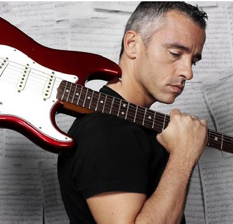

Música italiana pelo mundo
Eros Ramazzotti
Eros Luciano Walter Ramazzotti Molina nasceu no bairro de Cinecittà , na Itália,em 28 de Outubro de 1963, onde, desde de cedo, teve contato direto com a música. Aos oito anos ele ganhou sua primeira guitarra e depois de alguns anos participou do festival musical de Castrocaro, em 1981, com Rock 80. Surgia aà seu primeiro contrato com a gravadora DDD. Mas o sucesso na Itália vem em 1984 quando Eros vence o Festival de San Remo, na categoria "novas vozes". Em 1985 lança seu primeiro álbum da carreira, chamado CuoriAgiati. No ano seguinte Ramazzoti começa a despontar ao cenário internacional com o trabalho NuovoEroi e mais uma vez conquista o Festival de San Remo. Seu próximo disco, In CertiMomenti, produzido em 87, traz a parceria com a cantora inglesa PtsyKensit e vende nada menos que 2 milhões de cópias em toda a Europa. Eros Ramazzoti sai de cena e só retorna em 1990, com o lançamento do disco In Ogni Senso, cujo trabalho lhe dá a oportunidade de se apresentar pela primeira vez no Estados Unidos. Essa temporada é encerrada em 91 com o álbum duplo Eros In Concert. Depois de três anos o astro Italiano lança outro trabalho, TutteStorie. Dessa vez o sucesso chega a América Latina, onde ele se apresenta em 15 paàses. Em 1995 acontece um dos maiores momentos da sua carreira. Ele participa do Summer Festival, junto com personalidades do mundo do rock. Em sua produtora ele grava 'Dove C' è Musica' e recebe o prêmio MTV Awards como melhor cantor europeu.Eros se casa, tem uma filha e faz novamente uma pausa, voltando apenas em 98 com o álbum Eros, um disco que une as suas primeiras canções a músicas inéditas. Dois anos depois Ramazzoti se lança como produtor discográfico o cdCome Fa Bene L'Amore, de Gianni Morandi. Em outubro do mesmo ano Eros publica Stilelibero, o oitavo álbum de músicas inéditas da sua carreira. O cantor italiano regressou aos álbuns de estúdio, com o disco 9 (2003), onde deu continuidade ao seu estilo pop, cantado em italiano. O registo não teve grande expressão nas tabelas de vendas.Ainda em 2003, Eros, realizou um dueto com a brasileira Wanessa Camargo. O dueto foi realizado no programa 'Domingão do Faustão', da Rede Globo. Ainda nesse ano, chegaram à s lojas duas edições especiais: um CD duplo gravado ao vivo, Eros Ramazzotti Live e o Greatest Hits, reunindo os principais êxitos gravados na BM Em 20 anos de carreira Eros Ramazzoti já vendeu mais de 30 milhões de discos. Em maio de 2012 , Ramazzotti assinou um contrato com a Live Nation Italy para a organização de sua turnê mundial. Em 13 de novembro, agora com a Universal Music Group, lançou o álbum de inéditas "Noi". O primeiro single, intitulado "Un angelo disteso al sole", foi lançado em 12 de outubro, em italiano e espanhol (" Um anjo tu eres como el sol") e alcançou o número 1 no iTunes. No Echo Awards 2013, concedido em Berlim, em Março de 2013, foi nomeado , mas não ganhou prêmios.